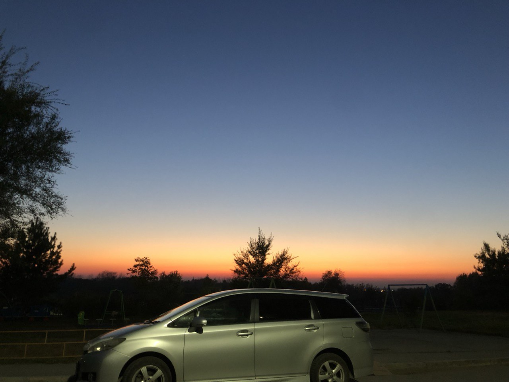
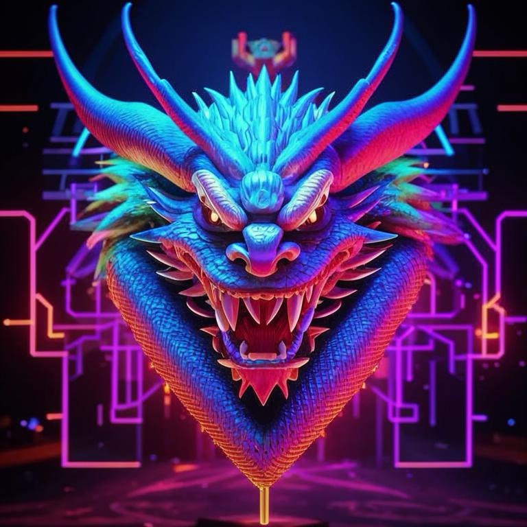
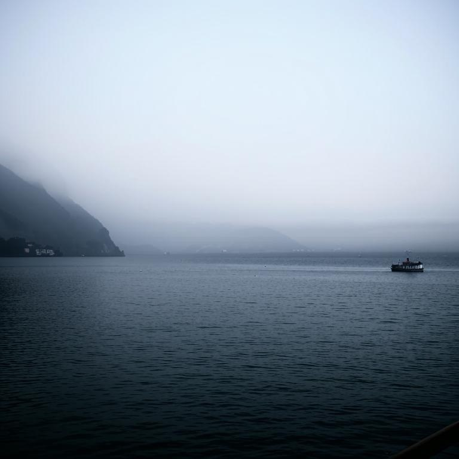
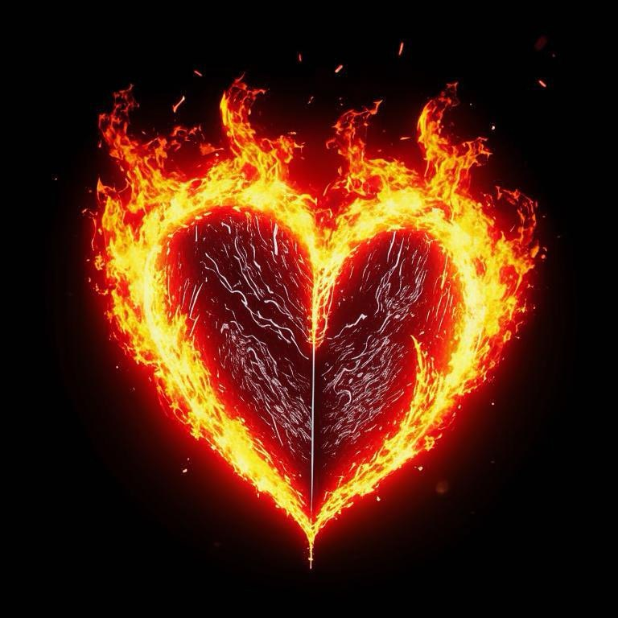
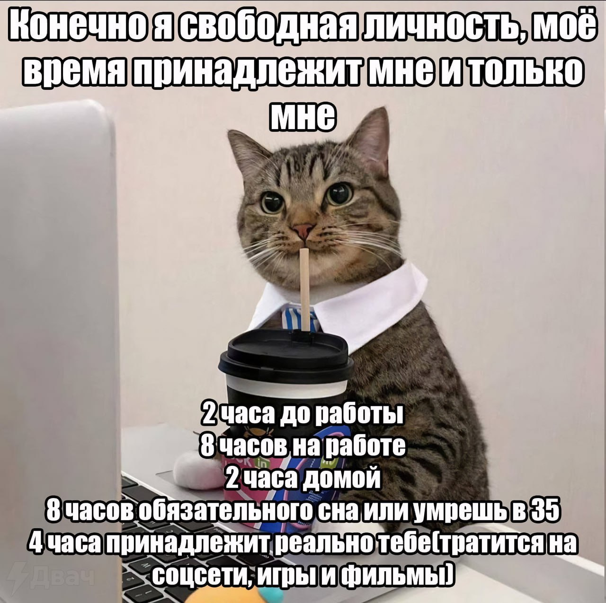
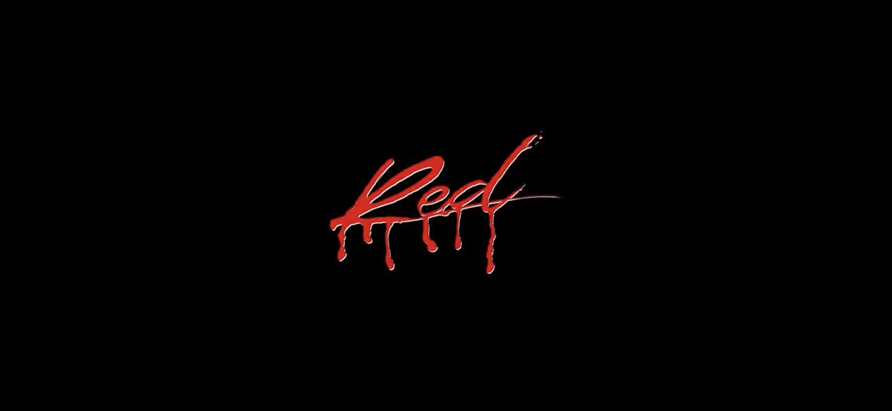

-
Фритрек и нулевой спринт: Подготовка к работе
</HTML>Это было самое начало пути. На этом этапе важно было проникнуться основами и настроиться на учёбу. И, возможно, подумать, как новые знания могут повлиять на ваше будущее.
Сначала я думал, что будет легко и не строил больших ожиданий.
-
1 спринт: Я — чистый лист
</HTML>На первых этапах мы работали со страхами и сомнениями, которые часто испытывают новички. Один из них — страх перед чистым листом. Это, конечно же, намного сложнее, чем боязнь куска бумаги. Часто за этим ощущением скрываются более глубокие вопросы: с чего начать? а вдруг будет слишком сложно? что, если я не справлюсь?
Первый спринт меня вдохновил, я наконец-то понял в чем можно найти себя.
-
1 спринт: А если не получится?
<css> Первый проект — позади! Но это всё ещё самое начало пути. Радость могла быстро померкнуть и смениться ожиданием провала. Или вы, наоборот, могли вдохновиться успехами и поверить в себя.
Мое ожидание легкости рассыпалось. Я осознал, что много ошибаюсь и сразу сделать идеально невозможно. Нужно набивать синяки, вставать и идти дальше.
-
2 спринт: Погоня за идеалом
<desigions> На этом этапе вы уже достаточно разбирались в основах вёрстки, чтобы понять, как много ещё впереди. Вы могли попытаться погнаться за идеалом и понять, что он недостижим. А, может, вы вовсе и не подвержены перфекционизму и вместо того, чтобы сделать идеально, старались просто сделать.
Второй спринт прошел как по маслу. Было интересно и теория очень быстро усваивалась у меня в голове.
-
2 спринт: О тех, кто рядом
care Всё это время вы были не одиноки (хотя, возможно, иногда и чувствовали, что одни против целого мира). Вас окружали одногруппники, команда сопровождения и просто близкие люди, которым можно пожаловаться, если очередной макет просто так не поддавался. Осваивать что-то новое легче, когда рядом есть единомышленники, не правда ли?
Самый быстрый и легкий спринт. Пришлось исправить всего несколько ошибок, получилось сдать ПР со второго раза. Возможно я себя в тот момент чересчур перехвалил..
-
3 спринт: Обходные стратегии
<support> На этом курсе вы постоянно решали разные задачи. В какой-то момент вам могло показаться, что решения просто иссякли. Значит, пришло время посмотреть на задачу под другим углом.
От третьего спринта я был в гневе. Очень много писал в поддержку о корявом тренажере. Параллельно с этим начались проблемы на текущем месте работы. Сил, как физических, так и моральных на занятия практически не оставалось. Перевелся в другую кагорту.
-
3 спринт: Когда опускаются руки
<lifes-style: none;> Во время учёбы часто возникает чувство, когда не знаешь, за что хвататься. Вроде и проектную пора сдавать, и задачи хочется порешать, и в теории получше разобраться, и жизнь не забыть пожить. В такие моменты очень нужна концентрация. Вспомните, откуда вы её черпали.
Скинул камень с плеч. Сдал наконец-то третью ПР и не торопясь приступил к 4 спринту. Концетрироваться мне помогала смена деятельности (особенно спортзал) и медитация.
-
«Сейчас я здесь»
<experience> Сейчас вы уже очень много знаете о вёрстке. Но это только начало. Во-первых, впереди ещё много материала про «красотищу». Во-вторых, с окончанием курса учёба не заканчивается. Вёрстка — это целый мир. И этот мир постоянно меняется. Познать его полностью не получится, но это тот случай, когда важен сам процесс познания. Ведь часто путь — и есть результат.
Меня посещают полярные мысли. С одной стороны хочется дать себе время, приостановить обучение и разгрести комок мыслей в голове, а с другой не хочу останавливаться в изучении Фронтенда. Стоит только на секунду остановиться, не успеешь оглянуться, как ты откатился в самое начало пути. Даже если меня отчислят с Практикума, я отчетливо знаю, что смогу освоить всю необходимую теорию, составить партфолио и в конце концов придти к той профессиональной деятельности, о которой я мечтал.